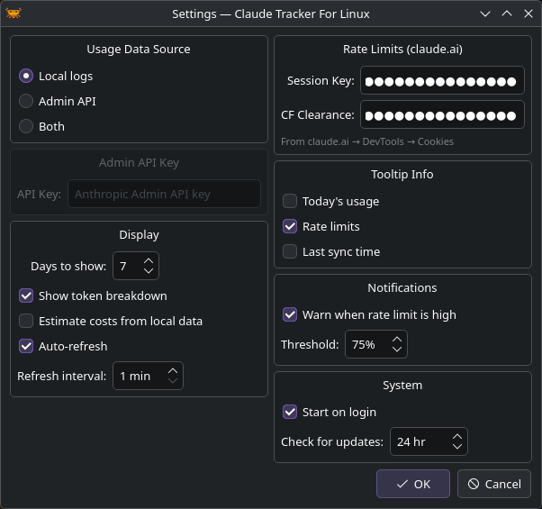
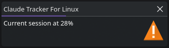

Configuration
Open settings from the tray menu (Right-click → Settings).

Usage Data Source
Choose where CTFL reads token usage data. See Data Sources for details.
| Option | Description |
|---|---|
| Local logs | Reads from ~/.claude/projects/ — no API key needed |
| Admin API | Fetches from the Anthropic Admin API |
| Both | Merges both sources |
Display
| Setting | Default | Description |
|---|---|---|
| Days to show | 7 | Number of days shown in the usage popup (1–90) |
| Show token breakdown | On | Show input/output token split in bar charts |
| Estimate costs from local data | Off | Calculate costs from local logs using public pricing |
| Auto-refresh | On | Periodically refresh usage data |
| Refresh interval | 1 min | How often to refresh (1–60 minutes) |
Rate Limits
To see plan utilization from claude.ai, you can provide cookies from your browser:
| Field | Description |
|---|---|
| Session Key | Your sk-ant-sid... cookie from claude.ai |
| CF Clearance | The cf_clearance cookie value |
Note
If you use Claude Code, CTFL automatically reads your OAuth token from ~/.claude/.credentials.json. The session key fields are an alternative for users who don't use Claude Code.
Tooltip Info
Choose what appears in the tray icon tooltip on hover:
- Today's usage — total tokens used today
- Rate limits — current session/weekly utilization
- Last sync time — when data was last refreshed
Notifications
| Setting | Default | Description |
|---|---|---|
| Warn when rate limit is high | On | Show a desktop notification when utilization exceeds the threshold |
| Threshold | 75% | The utilization percentage that triggers a warning |

System
| Setting | Default | Description |
|---|---|---|
| Start on login | Off | Create an autostart entry for your desktop environment |
| Check for updates | 24 hr | How often to check GitHub for new releases (0 = disabled, max 168 hr) |